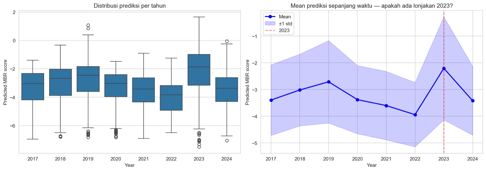
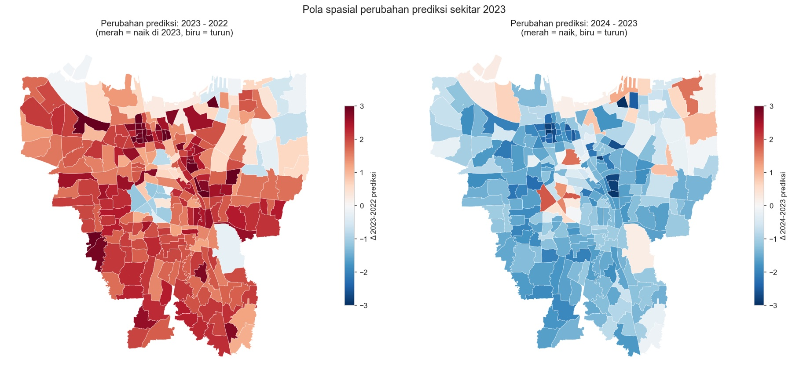
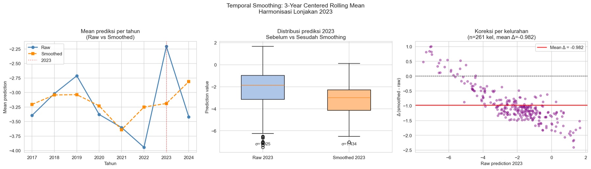
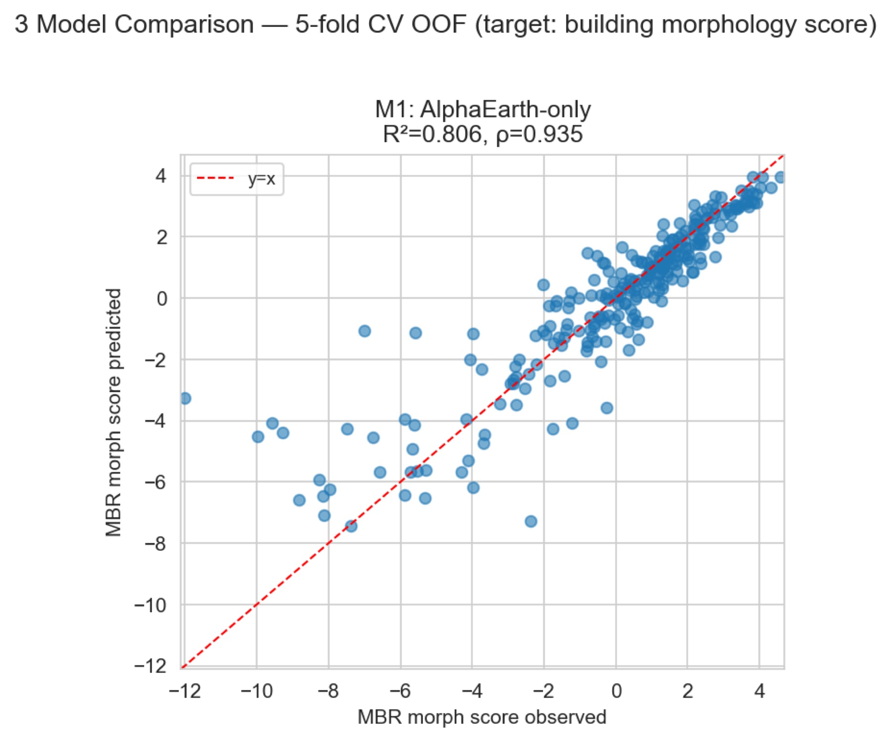
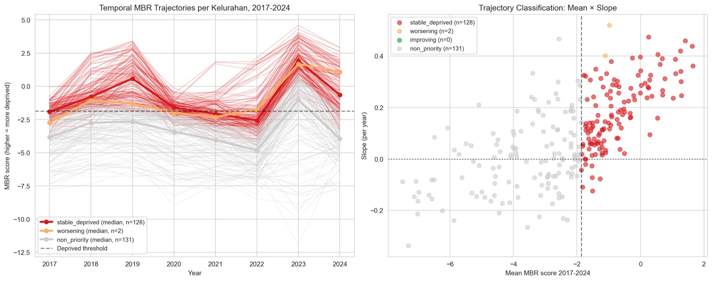
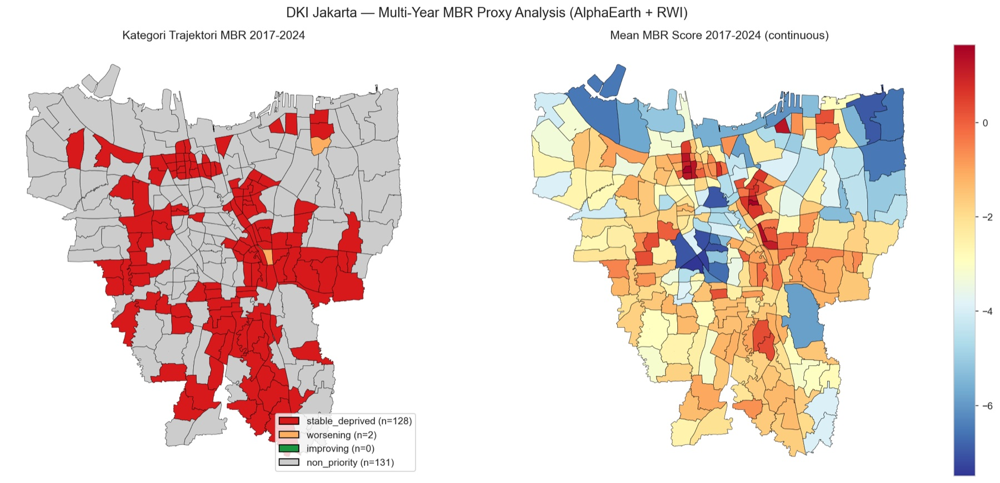
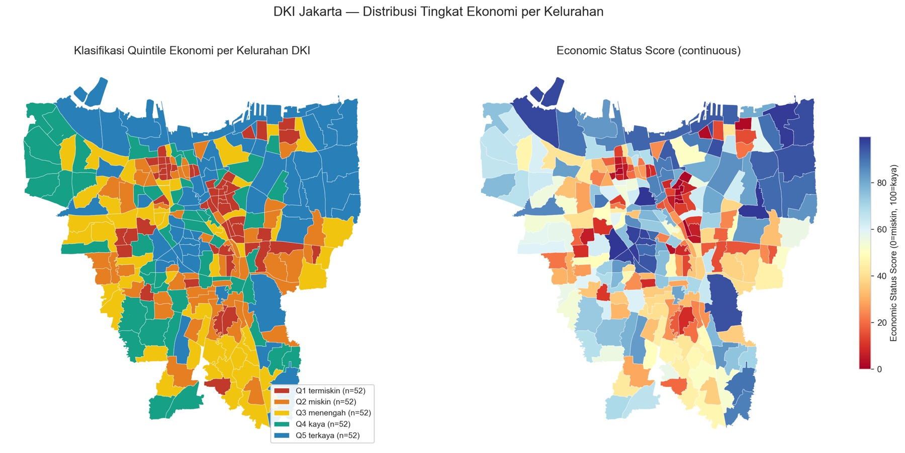
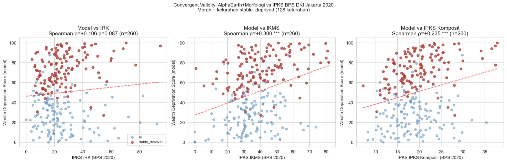
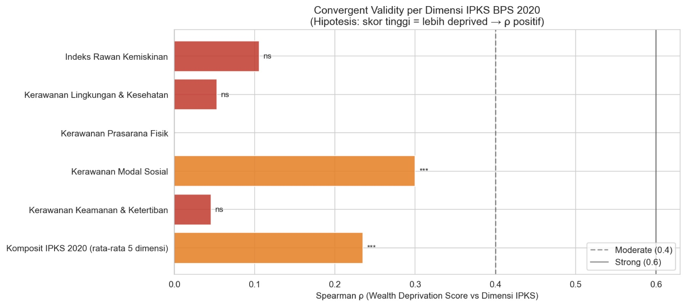

Objective
This study builds a satellite-based proxy for the concentration of low-income communities (Masyarakat Berpenghasilan Rendah / MBR) across DKI Jakarta, in a data-scarce setting where neighbourhood-level household survey data (Susenas) isn’t publicly available. It is a conceptual extension of Pönkänen, Tenkanen & Mladenović (2024) on transport equity, adapted for a Southeast-Asian megacity.
Five operational objectives:
- Build a temporally consistent MBR proxy (2017–2024) from public satellite imagery alone, without household-survey access.
- Test whether AlphaEarth satellite embeddings (2025) can capture urban morphology in a Southeast-Asian megacity.
- Run a two-stage validation to earn trust in the proxy.
- Detect and correct temporal artifacts arising from the model–embedding interaction.
- Classify each urban village’s temporal trajectory to support urban-equity analysis.
Methodology
AlphaEarth extraction
64-dimension satellite embeddings averaged per village per year in Google Earth Engine: 261 villages × 8 years = 2,088 feature rows.
Stage 1 · morphology prediction
XGBoost regresses the embeddings on a building-morphology ground truth; 5-fold out-of-fold evaluation yields R² = 0.806, ρ = 0.935.
3-tier wealth score
Predictions become a 0–100 deprivation percentile, then quintiles Q1–Q5, then an experimental PDRB-equivalent estimate (±40%).
Stage 2 · against IPKS BPS
Scores are matched to the official 2020 deprivation index (260/261 villages) and correlated across its five dimensions.
The 2023 artifact
A suspicious city-wide spike is traced through four testable hypotheses to non-linear amplification inside XGBoost, not real urban change.
Rolling-mean correction
A 3-year centered rolling mean removes the transient (slope bias −88%) and trajectories are re-classified per village.
Harmonized MBR proxy
103 stable-deprived, 22 worsening, and 5 improving villages, with the proxy framed as complementary to survey data.
Why a proxy, and why two stages. Village-level household survey data (Susenas) is not publicly available, so income cannot be the training target. The model instead targets something satellites can actually see, building morphology (density, footprint, coverage), with ground truth from Zhang et al.’s (2026) harmonized building-stock dataset. Whether morphology then says anything about deprivation is treated as a separate, testable question (Stage 2) rather than an assumption. This two-stage split is the methodological backbone of the study: Stage 1 asks “can the satellite see urban form?”, Stage 2 asks “does urban form track official deprivation?”.
The features: AlphaEarth embeddings. AlphaEarth Foundations (Brown et al., 2025) compresses a full year of multi-sensor satellite observation into a learned 64-dimension embedding for every 10 m pixel, a far richer signal than raw spectral bands. Embeddings are averaged over each village polygon in Google Earth Engine (reduceRegions at native 10 m scale, with geometry simplification for speed), independently for each year 2017–2024. The result is a 2,088-row feature table: 261 villages × 8 years × 64 dimensions.
Stage 1: the morphology model. XGBoost (500 trees, depth 5, learning rate 0.05, 0.8 row/column subsampling) regresses the 64 features on the building-morphology score. Performance is judged strictly out-of-fold with 5-fold cross-validation, so every village is scored by a model that never saw it during training: R² = 0.806, Spearman ρ = 0.935, which clears the “strong” benchmark in the urban remote-sensing literature. The final model is then retrained on all data and applied to each of the eight years.
Calibration to a wealth scale. Raw morphology predictions are made interpretable in three tiers. Tier 1 converts them to a 0–100 rank percentile (100 = most deprived in the DKI distribution). Tier 2 cuts the percentile into quintiles Q1–Q5, 52 villages each. Tier 3, flagged as experimental, disaggregates each administrative city’s PDRB using the score as a weight, carrying a ±40% error bar and an explicit warning against any household-level use.
Stage 2: convergent validation. Village scores are matched to the official IPKS BPS 2020 deprivation index by fuzzy string matching on village names (cutoff 0.85; 245 exact + 15 fuzzy = 260 of 261 matched) and correlated with its five dimensions using Spearman’s ρ, since the claim concerns ordering rather than linear fit. The strongest correlation lands on social capital (IKMS, ρ = 0.300) rather than direct poverty risk, which is what frames the proxy as complementary to administrative surveys instead of a substitute.
Hunting the 2023 artifact. Initial trajectories showed nearly every village spiking in 2023 and falling back in 2024, a pattern too synchronized to be real. Four hypotheses were tested in order: H1, the 2023 embeddings are themselves outliers (rejected: their z-score sits below the 8-year mean); H2, only specific embedding dimensions shifted (rejected); H3, XGBoost amplifies a small, statistically normal input shift into a large output jump (confirmed); H4, the spatial pattern is systematic rather than local (confirmed by the reciprocal red/blue delta maps below). Diagnosis: a model–feature interaction artifact, not urban change.
Harmonization. Each village’s series is smoothed with a 3-year centered rolling mean (edge years use the two available points):
Trajectories are then re-fit and re-classified with unchanged rules: above/below the median for deprived status, slope significance at p < 0.1 for worsening or improving. The smoothing cuts slope bias by 88% (mean slope +0.094 → +0.011) and, by removing the artifact, surfaces signal it had buried: worsening villages rise from 2 to 22, improving from 0 to 5. The same approach echoes the Kalman-style smoothing Zhang et al. use to harmonize building-stock data.



Data Used
| Source | Detail | Coverage | Role |
|---|---|---|---|
| Google AlphaEarth Foundations | 64-dim satellite embeddings, 10 m | 261 villages × 8 years | Model input |
| Zhang et al. (2026) | Building morphology (density, footprint, coverage) | 261 villages, 2023 | Training target |
| IPKS BPS DKI 2020 | 5 dimensions (IRK, IKLK, IKPF, IKMS, IKA) | 267 DKI villages | Convergent validator |
| Meta Relative Wealth Index | RWI Indonesia, 2.4 km | Nationwide | Reference spatial join |
| PDRB per capita (BPS 2023) | City-level gross regional product | 5 administrative cities | Tier-3 calibration |
| Kelurahan shapefile | Administrative boundaries (UTM-48S) | 261 villages · 644.5 km² | Geometry |
Analysis
AlphaEarth embeddings were extracted per village per year via Google Earth Engine (2,088 rows = 261 × 8), an XGBoost model was trained against building morphology with 5-fold out-of-fold evaluation, predictions were temporally harmonized, and each village was classified into a trajectory (stable-deprived / worsening / improving / non-priority). The proxy was then cross-checked against the official IPKS index.






Results
- AlphaEarth reads urban morphology strongly. R²=0.806 and Spearman ρ=0.935, new-generation satellite foundation models work well for a Southeast-Asian megacity.
- Satellite & survey are complementary, not substitutes. The strongest link is with Social Capital (IKMS, ρ=0.300), not poverty directly (IRK, ρ=0.106, ns); composite ρ=0.235, weak-but-significant. The proxy captures a spatial-physical dimension of deprivation that survey indices don’t.
- A non-linear amplification artifact was found and corrected. Harmonization cut slope bias 88% and surfaced 22 worsening + 5 improving villages that the artifact had masked.
- Spatial concentration matches Jakarta’s known kampung kota. Tambora (11 villages), Jatinegara (7), Duren Sawit / Kemayoran / Taman Sari (6 each).
- A coastal–inland split emerges. Worsening clusters on the North Jakarta coast (Koja: Lagoa, Tugu Utara/Selatan), while the few improving villages sit in South Jakarta, a pattern that hints at gentrification and needs field validation.
| Trajectory | Raw | Harmonized | Meaning |
|---|---|---|---|
| Stable-deprived | 128 | 103 | Above-median morphology, flat slope |
| Worsening | 2 | 22 | Above-median, significant positive slope |
| Improving | 0 | 5 | Above-median, significant negative slope |
| Non-priority | 131 | 131 | Below-median morphology |
| IPKS dimension | Spearman ρ | Significance |
|---|---|---|
| Social Capital (IKMS) | +0.300 | p < 0.001 *** |
| Composite IPKS | +0.235 | p < 0.001 *** |
| Poverty Risk (IRK) | +0.106 | ns |
| Environment & Health (IKLK) | +0.053 | ns |
| Safety & Order (IKA) | +0.046 | ns |
Conclusion: a reproducible, satellite-only pipeline can map the morphological-economic character of all 261 DKI Jakarta urban villages as an MBR proxy across 2017–2024. The proxy is strong at reading morphology and weakly-but-significantly aligned with official deprivation indices, capturing a spatial-physical dimension that complements, rather than replaces, survey data. Its most defensible output is a statistically confident set of persistently deprived and worsening neighbourhoods, concentrated in Jakarta’s classic kampung kota and along the northern coast. Direct MBR claims would still need validation against household survey data, and “improving” morphology should not be read as rising welfare without field checks.
References
BPS Provinsi DKI Jakarta. (2022). Indeks Potensi Kerawanan Sosial Provinsi DKI Jakarta 2020. BPS-Statistics DKI Jakarta Province.
Brown, C. F., Kazmierski, M. R., et al. (2025). AlphaEarth Foundations: An embedding field model for accurate and efficient global mapping from sparse label data. arXiv:2507.22291.
Chi, G., Fang, H., Chatterjee, S., & Blumenstock, J. E. (2022). Microestimates of wealth for all low- and middle-income countries. Proceedings of the National Academy of Sciences, 119(3), e2113658119.
Cohen, J. (1988). Statistical Power Analysis for the Behavioral Sciences (2nd ed.). Lawrence Erlbaum Associates.
Hernandez, M., et al. (2023). Strengths and limitations of relative wealth indices derived from big data in Indonesia. Frontiers in Big Data, 6, 1054156.
Pettersson, M. B., & Daoud, A. (2025). Leveraging Compact Satellite Embeddings and Graph Neural Networks for Large-Scale Poverty Mapping. arXiv:2511.01408.
Pönkänen, M., Tenkanen, H., & Mladenović, M. (2024). Spatial accessibility and transport inequity in Finland: Open source models and perspectives from planning practice. Computers, Environment and Urban Systems, 108, 102179.
Zhang, W.-B., McKeen, T., Priyatikanto, R., et al. (2026). A temporally harmonised gridded building-stock dataset for the Global South, 2016–2023. VeriXiv, 3:163.
Meta Data for Good. (2023). Relative Wealth Index, Indonesia. Humanitarian Data Exchange.